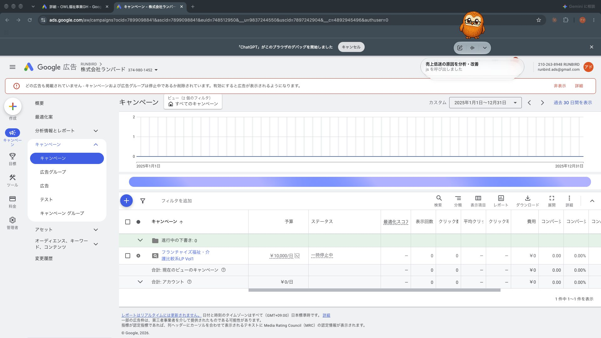

7/25〜9/10の過去資料を照合して矛盾点を洗い出し、方針を決めた。鈴木さんに確認したいのは「ドメイン」「広告アカウント」「夜間の受け手」の3点。
地域・電話番号・最終URL・電話代行の方針は決定（案）。配信開始の前に、鈴木さんの確認が必要なのは3点。
特にドメインが無いと本番公開ができず、Google広告の審査自体が通らない（仮URLでは審査不可の設計）。
| 確認事項 | 状況 | 内容 |
|---|---|---|
| ドメイン | 未取得 | 取得をお願いしたい（候補「家族葬の光」系）。取得後に本番環境へアップ |
| Google広告アカウント | 要確認 | 葬儀の広告を紐付けるのは、下の画面のランバード既存アカウントで合っているか（⑤参照） |
| 夜間・早朝の受け手 | 要確認 | 電話代行を使わない場合、深夜の着信は誰が受けるか（設計時の想定はTrue Heartへの転送）。着信ログ・録音が取れるかも確認（撤退判断の根拠になるため） |

| 見てほしい点 | 現状 |
|---|---|
| アカウント | 7/25の設計どおり、ランバード既存アカウントに相乗りして葬儀用キャンペーン（葬儀_家族葬光_検証）を新規作成する |
| 今ある内容 | 福祉・介護系のキャンペーンが1本（一時停止中）のみ。葬儀用はまだ未作成 |
| 福祉への影響 | コンバージョンはキャンペーン単位で設定し、福祉側の自動入札の学習に影響しないようにする |
| 請求 | 既存アカウントの請求設定をそのまま流用 |
対応エリア拡大・横浜市営斎場5件（住所/TEL/FAX付き）・電話番号0120-264-167、反映済み。noindex・ドメイン未取得のプレビュー状態。
| 順番 | 内容 | 担当 |
|---|---|---|
| 1 | ドメイン取得／広告アカウント・夜間の受け手の確認 | 鈴木さん |
| 2 | 本番環境へのLPアップ・ドメイン設定 | 取得後に対応 |
| 3 | 一時停止状態でキャンペーンを組む（確定済み設定を投入） | 星崎さん |
| 4 | 配信ON | 鈴木さん明示承認後 |